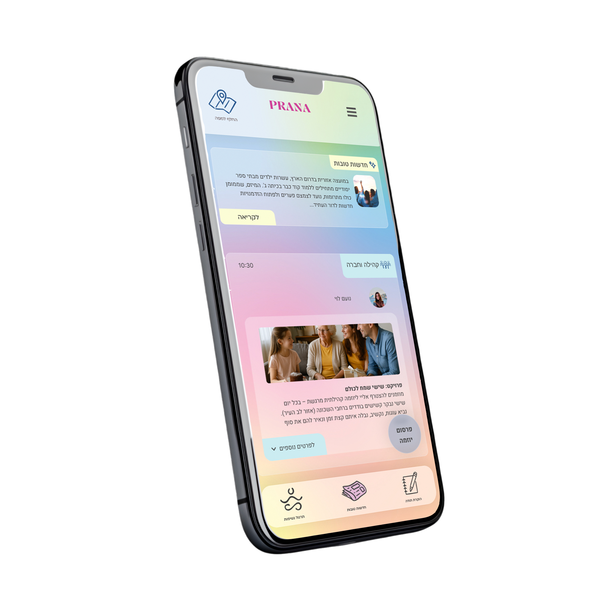

Prana: A Digital Sanctuary
Description: How can design help us breathe easier? Prana was created to combat the anxiety of "doomscrolling." It serves as a positive alternative to negative news, offering users a safe digital space for mindfulness, relaxation, and emotional balance.
UX research
Interaction Design
UI design
usability testing
illustration
View Case Study